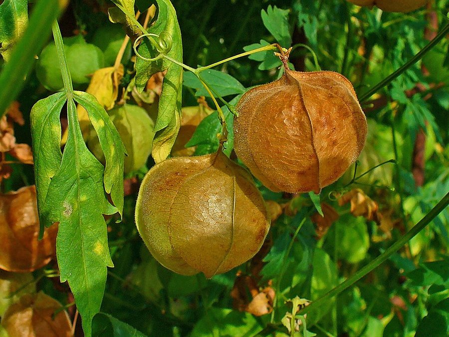

कनफूटीBalloon Vine
Cardiospermum halicacabum · Sapindaceae · FLR-0168

- Scientific name
- Cardiospermum halicacabum L.
- Family
- Sapindaceae
- Hindi
- कनफूटी
- Local names
- kanphuti, kanphoti, kanphata, balloon vine
- Status here
- native
- Movement
- Resident, here all year
- IUCN
- not evaluated
- Review
- audited and independently read
When to look कब देखें
Expected mainly in May, June, July, August, September, October, November.
Uses and possibilities उपयोग और संभावनाएँ
“Traditional medicine” means a documented traditional use, not a claim that it works. Nothing on this page is medical advice.
Drawn from the documented uses in the profile below, where each is labelled traditional, current or a research lead. All uses →
कनफूटी / Balloon Vine
Cardiospermum halicacabum L. — Sapindaceae
कनफूटी (फूली, धुधा पुली) — बसंत से सर्दी तक गली-मुहल्ले और खेतों की बाड़ों पर अपने आप उग आने वाली एक हल्की बेल। पत्तियाँ छोटी-छोटी, दो-तीन इंच, पंख जैसी, नाज़ुक। फूल सफेद, बहुत छोटे, गुच्छे में। फल गोल-मटोल, हवा वाली थैली जैसे (यही इसका नाम कनफूटी हुआ — फूली हुई नाभि), जिसमें काले दाने होते हैं। इसके पत्तों को पारंपरिक दवाई में खाज-खुजली और जलन के लिए प्रयोग किया जाता है।
Quick Identification त्वरित पहचान
| Feature | Description |
|---|---|
| Stem | Slender, angular, hairless, climbing with tendrils, up to 2 m |
| Leaves | Alternate, compound, bipinnate or tripinnate, 3–8 cm long, delicate |
| Tendrils | Axillary, 2–4, coiled, for climbing |
| Flowers | White or pale yellow, small, 0.4–0.6 cm, in small clusters |
| Fruits | Inflated, papery, spherical or obovoid, 2–3 cm, pale green with three lobes |
| Seeds | Black, smooth, 5–7 mm, with a white heart-shaped aril |
Field tip: A delicate climbing vine with feathery, compound leaves and small white flowers followed by distinctive inflated, pale green balloon-like fruits. The botanical name halicacabum means "salt-pot," referring to the fruit shape.
Morphology आकारिकी
Biometrics (typical measurements for cultivated and wild plants in northern India):
| Measurement | Range |
|---|---|
| Vine length | 1–2 m |
| Leaf length | 3–8 cm |
| Leaflet length | 0.8–1.5 cm |
| Flower diameter | 0.4–0.6 cm |
| Fruit diameter | 2–3 cm |
| Seed diameter | 5–7 mm |
Stems: Slender, angular, not woody, slightly ridged, hairless, green, producing tendrils from leaf axils.
Leaves: Alternate, compound, bipinnate or tripinnate, giving a feathery appearance. Leaflets are small, oblong, with a smooth margin. The leaf texture is soft and smooth.
Flowers: Regular, 5-petaled, white or pale yellow, small, borne in small cymes or clusters. Both male and female flowers occur on the same plant. The flowers are inconspicuous.
Fruits: Papery, thin-walled, inflated, spherical or slightly obovoid, divided into three chambers by internal septa. The fruit is pale green, becoming tan or brown when dry. Each chamber contains one seed.
Seeds: Smooth, black, with a distinctive white heart-shaped aril (seed cover) that gives the plant its scientific name Cardiospermum (heart-seed).
हिंदी: पतली डंडी, पंख जैसी पत्तियाँ, सफेद फूल, गुब्बारे जैसे फल। बीज काले, दिल की आकार की सफेद पूँछ के साथ।
Behaviour & Ecology व्यवहार और पारिस्थितिकी
A tropical and subtropical climbing herb of American origin, widely naturalized in Asia and Africa. Cardiospermum halicacabum is a warm-season annual that grows rapidly in summer and dies back after the first frost. It thrives in well-drained soils and can establish on disturbed ground, hedgerows, and along field margins. The plant is a light climber that does not shade or smother other vegetation.
The flowers attract small bees and other pollinators. The fruits are dispersed by wind and water; the inflated fruit structure aids floating dispersal along streams and irrigation channels. The plant is capable of self-seeding and can persist as a volunteer in cultivated and semi-natural habitats.
हिंदी: गर्मियों की बेल, सर्दी के पहले मर जाती है। हल्की-फुल्की, दूसरी चीज़ों को नुकसान नहीं पहुँचाती। फल हवा और पानी से फैलते हैं।
Life Cycle / Phenology जीवन चक्र
| Month / Season | Event |
|---|---|
| March–May | Seed germinates with onset of summer heat; seedling establishment |
| May–July | Rapid vegetative growth; covering trellises and supports |
| June–September | Flowering; small clusters of white flowers |
| July–October | Fruit development; fruits swell and inflate |
| September–November | Fruit maturation and ripening; seed dispersal |
| December onwards | Plant decline and death after first frost |
From germination to first flower: 6–8 weeks. Multiple flushes of flowers and fruits occur throughout the warm season if moisture is adequate.
हिंदी: मई में बीज, जून-जुलाई में फूल, जुलाई-नवंबर में फल और बीज।
Associated Species / Interactions संबंधित प्रजातियाँ
- On trellises: Sometimes grown alongside Pointed Gourd, Bottle Gourd, and other climbing vegetables for support.
- Garden companions: Found in kitchen gardens (bari) with herbs and other small plants.
- Insect visitors: Small bees visit the flowers; no major pest associations recorded.
Pests and Diseases कीट और रोग
- No significant pests or diseases reported in most regions.
- Occasionally affected by leaf-eating insects in dense stands, but damage is usually minor.
Agricultural / Human Relevance कृषि प्रासंगिकता
Traditional medicine: In Ayurvedic and folk medicine of South Asia, Cardiospermum halicacabum has a long recorded use. The leaf and stem decoction is traditionally used for treating skin conditions such as eczema, psoriasis, and general itching. The plant is recorded in Kirtikar & Basu (1935) and Chopra et al. (1956) as a cooling (shita) herb. The leaves are also used traditionally for treating burning sensations and inflammatory conditions.
Garden use: The plant is sometimes cultivated in homestead gardens for its ornamental value and medicinal use. The distinctive balloon-like fruits are attractive and retain interest through the autumn.
Ecological role: As a pioneer on disturbed ground, the plant aids soil stabilization on field margins and eroded areas. The leaf-fall contributes organic matter to the soil.
हिंदी: पत्तियों को खाज-खुजली, जलन, एक्जिमा के लिए पारंपरिक दवाई में काम लेते हैं। शीतल और सूजन कम करने वाली मानी जाती है।
Expected Locally स्थानीय रूप से अपेक्षित
Not a field record. Written from published accounts for eastern Uttar Pradesh. No confirmed local sighting yet — if you have seen it, that is what the atlas needs.
अभी तक स्थानीय पुष्टि नहीं। यह विवरण प्रकाशित स्रोतों से है, किसी अवलोकन से नहीं।
Expected as a spontaneous climber in field margins, hedgerows, and disturbed ground throughout Basti district during the warm season (May to November). The distinctive inflated fruits should be easily visible in late summer and autumn. Local knowledge of its traditional medicinal use would be valuable to record.
Distribution वितरण
Global range: Native to tropical America; now naturalized throughout tropical and subtropical Asia, Africa, and Australia.
In India: Widespread in the Indo-Gangetic plain and Deccan; cultivated as an ornamental in gardens; naturalized on disturbed ground.
In Uttar Pradesh: Common on field margins and in gardens throughout the state.
In Basti district / eastern UP: Expected as a spontaneous climber on hedgerows and in field margins during the warm season.
Research Questions शोध प्रश्न
Anyone can investigate these | कोई भी इन प्रश्नों की जाँच कर सकता है
- How far do kanphuti seeds disperse when floating in irrigation water? — Collect floating fruits; follow them downstream; note distances.
- Does traditional use of kanphuti leaves for skin conditions vary between villages, and what is the preparation method? / कनफूटी की पत्तियों का उपयोग त्वचा रोगों के लिए गाँव-दर-गाँव अलग है? — Interview healers and elders; document preparations.
- How many seeds are produced from one fruit, and how many germinate after 6 months of storage? — Harvest ripe fruits; count and test seeds.
- Which insects visit the flowers, and do they also visit nearby crops like parwal or bottle gourd? — Observe flowers; identify pollinators; check other nearby plants.
- If kanphuti seeds are sown in March vs. May, which gives better growth by October? — Compare two sowing dates in a controlled area.
Similar Species मिलती-जुलती प्रजातियाँ
| Species | How to tell apart | हिंदी |
|---|---|---|
| Pointed Gourd (Trichosanthes dioica) | Larger fruits (10–15 cm), elongate-oval, green with white stripes; thicker stems | परवल — बड़े फल, पट्टेदार |
| Bottle Gourd (Lagenaria siceraria) | Much larger fruits (20–40 cm), bottle or gourd-shaped; thicker stems | लौकी — बहुत बड़े फल |
| Securinega virosa (Dhudhi or similar climbing herb) | Leaflets larger, glossy; fruits are small capsules, not inflated | धुधी — पत्तियाँ बड़ी, फल अलग |
Field rule: A delicate, thin-stemmed climber with feathery compound leaves, small white flowers, and distinctive inflated, pale green, balloon-like fruits containing black seeds with white heart-shaped arils is kanphuti.
Taxonomy & Classification वर्गीकरण
Original description. Described by Carl Linnaeus in 1753 in Species Plantarum. The genus name Cardiospermum is derived from the Greek cardia (heart) and sperma (seed), referring to the distinctive white, heart-shaped aril on the black seed. The specific name halicacabum comes from the Arabic khalic and Latin cacabum, together meaning "salt-pot," referring to the fruit shape.
Subspecies. Monotypic — no subspecies are currently recognised.
Family and order placement. Sapindaceae, order Sapindales. The family includes soapnuts (Soapnut) and other seed-bearing plants. Cardiospermum shares the tendril-bearing climbing habit with members of Cucurbitaceae and Vitaceae.
Phylogenetic notes. Cardiospermum halicacabum is the most widely distributed species in the genus, with closest relatives in tropical America. The genus contains about 14 species, mostly in tropical regions.
IUCN status rationale. Not evaluated. Widely naturalized; not assessed for conservation status.
Photo Gallery फोटो गैलरी
Photos needed आवश्यक फोटो
- [ ] Vine with flowers and young fruits
- [ ] Inflated, mature fruits on the vine
- [ ] Close-up of black seeds with white heart-shaped aril
No photos yet — add field photos to media/species/kanphuti/ and run node scripts/sync_photos.js.
References संदर्भ
- Linnaeus, C. (1753). Species Plantarum. Laurentii Salvii, Stockholm, Vol. 1, p. 366.
- Hooker, J.D. (1875). Flora of British India, Vol. 1. L. Reeve & Co., London.
- Kirtikar, K.R. & Basu, B.D. (1935). Indian Medicinal Plants, Vol. 2. Lalit Mohan Basu, Allahabad.
- Chopra, R.N., Nayar, S.L. & Chopra, I.C. (1956). Glossary of Indian Medicinal Plants. CSIR, New Delhi.
- Botanical Survey of India. State Flora Series: Flora of Uttar Pradesh. BSI, Kolkata.
- GBIF Occurrence Data — Cardiospermum halicacabum, India (2020–2026).
Source file: species/flora/climbers/kanphuti.md